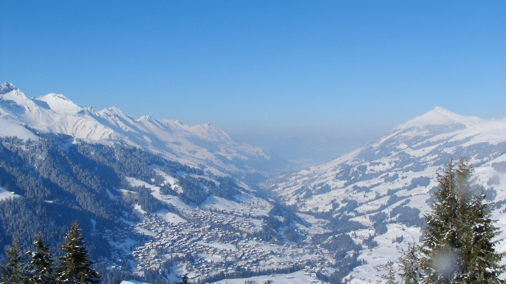
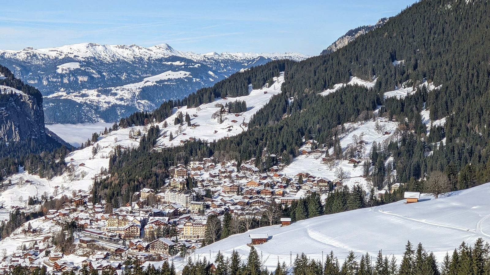
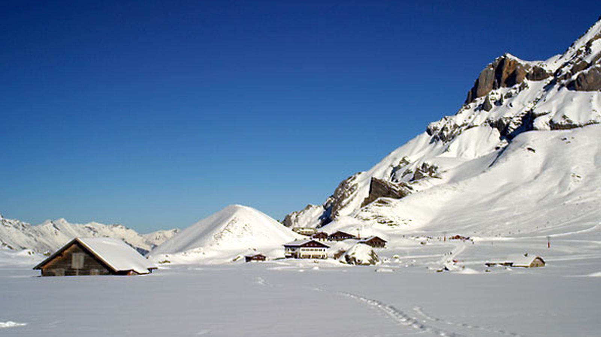
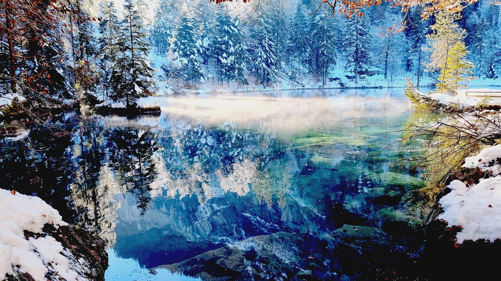
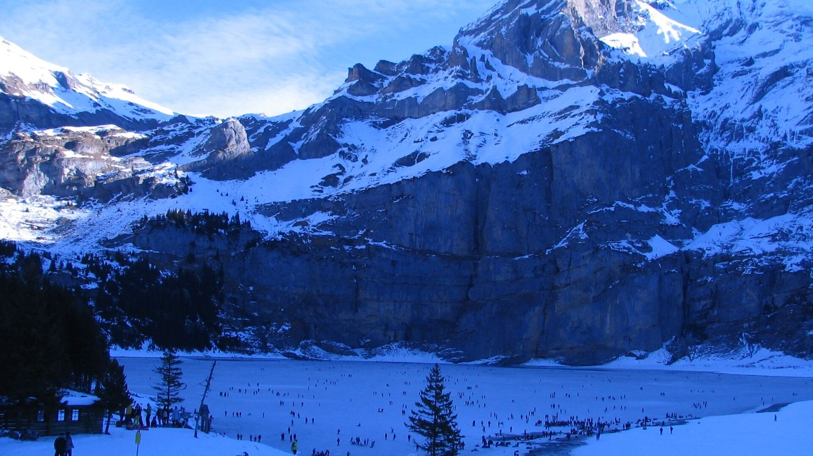

Europe · 10–31 December 2026 · Recommended route
Paris, Iceland, then one Alpine base in Adelboden
Paris 10–12 Dec → Iceland 12–19 Dec as in the current plan → daytime flight to Geneva → Chalet Sonnenheim, Adelboden, 19–30 Dec → TGV Lyria to Paris → CDG night → QR40 on 31 Dec. AUD for 2 adults and kids aged 7 and 10, long-haul excluded. Prices checked 22–23 Oct 2026. Nothing is booked. All options

Why this route
- One base, little travel: a single 11-night stay in a 2-bed apartment with a kitchen. No packing up between 19 and 30 Dec.
- Light after the dark: about 8½ hours of daylight (sunrise ~08:15, sunset ~16:40; valley shade cuts it a little) after Iceland’s ~4 hours of aurora-season daylight.
- Snow at the door: the village is at 1,350 m with Tschentenalp (1,937 m) and Engstligenalp (1,964 m) 5–20 minutes away; Männlichen (2,230 m) is the high-altitude backup.
- Refundable: free cancellation on the chalet to 19 Nov and flexible Accor rates in Paris. Car-free: the Guest Card makes local buses free.
Day by day
Big = a full outing; no two in a row. Every Swiss outing is back by about dark, all suit ages 7 and 10, and the 7-year-old can ride a sledge with a parent. Swipe sideways on a phone.
| Date | Where | Plan | Load | Iceland overlap |
|---|---|---|---|---|
| Thu 10 Dec | Paris | Land 13:15 (QR39). Check in at Novotel Paris Centre Tour Eiffel. Evening: Champs-Élysées lights and the Arc de Triomphe roof (284 stairs; lift out of service). | Arrival | |
| Fri 11 Dec | Paris | Notre-Dame (free slot, book that morning), Eiffel summit in the afternoon, Seine cruise at dusk. | Big | |
| Sat 12 Dec | Iceland | easyJet CDG 14:45 → KEF 17:35, pick up the car, Blue Lagoon on the way in. | Travel | |
| Sun 13 Dec | Iceland | Into the Glacier from Húsafell, Deildartunguhver on the way back; aurora check. | Big | |
| Mon 14 Dec | Iceland | Golden Circle: Þingvellir, Strokkur, Gullfoss (short stops). Sleep in Selfoss. | Medium | |
| Tue 15 Dec | Iceland | Seljalandsfoss, Skógafoss, Dyrhólaey, on to Vík. | Medium | |
| Wed 16 Dec | Iceland | Katla ice cave 09:00, Reynisfjara, Lava Show 15:00. | Big | |
| Thu 17 Dec | Iceland | Weather buffer; Secret Lagoon (Flúðir). Álftanes pool dropped. | Rest | |
| Fri 18 Dec | Iceland | Reykjavík: Yule Lads and Christmas lights; pack. Early night. | Rest | |
| Sat 19 Dec | Travel | Leave about 05:45, return the car at KEF. Icelandair 09:00 → Geneva 13:45. Train 14:45 → Bern 16:56: shop for groceries in Bern station (shops open daily), then 17:39 RE → Frutigen → bus 230 → Adelboden 19:02. | Travel | |
| Sun 20 Dec | Adelboden | Settle in. Village walk, snow play near the chalet, top-up shop (Coop Adelboden opens Sunday afternoons in season, about 14:00–18:30; check). Cook. | Rest | |
| Mon 21 Dec | Jungfrau | Bus 07:51 → Wengen 10:11 (Staubbach Falls from the train at Lauterbrunnen). Cable car to Männlichen (2,230 m) facing the Eiger, Mönch and Jungfrau; hire sledges and ride the 5.5 km easy run to Holenstein (~1 h). Gondola down to Grindelwald Terminal; 15:21 train, back 17:30. | Big | Glacier views only (No); Staubbach Falls through the window (Partly) |
| Tue 22 Dec | Adelboden | Quiet day: sleep in, board games, cook. Short afternoon walk. | Rest | |
| Wed 23 Dec | Bern | Bus 08:51 → Bern 10:22. Zytglogge clock on the hour, BärenPark, Christmas markets at Münsterplatz and Waisenhausplatz (open to 18:30/20:00), Dählhölzli zoo and Vivarium. Optional dusk stop at the Thun market (open to 20:00). Bern 16:39 → Adelboden 18:02. | Big | Christmas market (Partly: far bigger and older than Reykjavík’s) |
| Thu 24 Dec | Adelboden | Christmas Eve. Bus 10:00 → Unter dem Birg; cable car to Engstligenalp (1,964 m) past the frozen Engstligen Falls; snow play and a winter walk on the plateau; back by 14:30. Shop for 25–26 Dec before shops close early. Raclette or fondue at the chalet. Optional 22:00 Christmas Eve service at Adelboden church (also livestreamed). | Medium | Frozen waterfall (Partly) |
| Fri 25 Dec | Adelboden | Christmas Day: shops shut, buses and lifts run on holiday timetables. Presents, snowman, short village sledge. Cook. | Rest | |
| Sat 26 Dec | Adelboden | St Stephen’s Day (public holiday; shops shut). Lazy morning; from about 14:30 Tschentenalp sled park (gondola 5 min from the chalet): four runs, seven sledge types, staying for the floodlit night session (Wed and Sat evenings). | Medium | |
| Sun 27 Dec | Adelboden | Rest day: cook, read, swap sledging stories. | Rest | |
| Mon 28 Dec | Kandersteg | Bus 08:51 → Blausee 09:41: blue trout lake in snowy forest (1 h). Bus → Kandersteg 11:54, Oeschinensee gondola and the winter walk to the lake (ice walk and the sledge run only if officially open). Back by about 16:30. | Big | |
| Tue 29 Dec | Adelboden | Easy last day. Optional Silleren sledge day pass from 11:00 (CHF 48 adult / 24 child incl. sledge; not in the total). Clean up and pack. | Rest | |
| Wed 30 Dec | Travel | Bus 08:51 → Frutigen 09:30 → Bern 10:22 → IC 10:33 → Basel SBB 11:29 (an hour’s buffer, early lunch). TGV Lyria 12:33 → Paris Gare de Lyon 15:38. Taxi to Novotel Paris CDG Airport, about 17:00. | Travel | |
| Thu 31 Dec | Paris CDG | At the terminal by 12:00 for QR40 at 15:15. | Travel |

Christmas in Switzerland: what’s open
- 24 Dec: lifts and buses run. Shops close early (plan the 25–26 Dec food shop by early afternoon). The Bern markets close at 16:00/17:00, so they’re on 23 Dec instead. Adelboden church holds a 22:00 Christmas Eve service (also livestreamed).
- 25 Dec and 26 Dec (St Stephen’s Day is a public holiday in canton Bern): shops shut, while lifts, buses and trains run on holiday timetables. The Bern zoo is open 09:00–17:00 on 24 and 25 Dec. Tschentenalp night sledging runs Wednesday and Saturday evenings in high season, so Sat 26 Dec.
- Season start: Tschentenalp sledging is listed daily from 18 Dec 2026, Männlichen from 12 Dec, and the Engstligenalp cable car daily from 25 Nov. Snow on the runs isn’t guaranteed.

Iceland overlap check
| Swiss experience | Similar to Iceland? | Why / decision |
|---|---|---|
| Männlichen sledging, Eiger/Mönch/Jungfrau views | No | Iceland’s glaciers are seen from inside; this is a long Alpine sledge run with peaks above. Keep. |
| Tschentenalp night sledging | No | Nothing like it in Iceland. Keep. |
| Blausee and Oeschinensee | No | Forest and frozen-lake scenery; Iceland has none of this. Keep (Oeschinensee if conditions allow). |
| Bern bears, zoo and Zytglogge | No | Animals and a medieval city; nothing similar in the Iceland leg. Keep. |
| Bern / Thun Christmas markets | Partly | Reykjavík has lights and Yule Lads, not big markets. Keep. |
| Engstligen Falls (frozen) on the way to Engstligenalp | Partly | Iceland has Gullfoss, Seljalandsfoss and Skógafoss. The falls are only seen from the cable car; the day is about the snow plateau. Keep. |
| Staubbach Falls, Lauterbrunnen | Partly | A glimpse from the train only; no separate stop. Keep as a glimpse. |
| Jungfraujoch Ice Palace / glacier | Yes | The same "inside the ice" idea as Into the Glacier and Katla, about $340+ and a long day. Dropped. |
| Thermal baths (Leukerbad, etc.) | Yes | Blue Lagoon and Secret Lagoon cover hot pools. Dropped. |
Getting there and around
Iceland → Switzerland, 19 Dec (Google Flights, one way, 2 adults + 2 children, 23 Oct):
| Flight | Price | Notes |
|---|---|---|
| Icelandair KEF 09:00 → Geneva 13:45, non-stop | $2,005 | Chosen: daytime, at the chalet by 19:02. Means leaving Reykjavík ~05:45 (sleeping near KEF on 18 Dec would help). |
| Icelandair KEF 07:20 → Zürich 12:05, non-stop | $2,232 | Even earlier start, dearer. |
| BA KEF 11:55 → Zürich 20:25 via Heathrow | $1,099 | Cheapest. The last practical connection reaches Adelboden at 23:52, so sleep at Novotel Zurich Airport on points (cut 1). |
| Edelweiss KEF 14:05 → Zürich 19:00, non-stop | $3,242 | Too dear. |
Swiss passes (prices valid to 31 Dec 2026; kids 6–15 ride free with a parent on the free Swiss Family Card either way):
| Option | Cost, 2 adults | Notes |
|---|---|---|
| Swiss Half Fare Card (CHF 150 each, 1 month) + half-price tickets | ~$1,075 $525 + ~$550 E | Chosen. Only 4 rail days are needed. The Adelboden Guest Card already makes the Adelboden–Frutigen–Kandersteg buses free, and lifts are 50% off with Half Fare (Männlichen, Engstligenalp, Oeschinensee). |
| Swiss Travel Pass, 15 consecutive days (CHF 499 each) | $1,747 | All trains and buses, 50% off most lifts. You’d pay for 8 days you don’t ride. |
| Hire car, Geneva 19 → Basel 30 Dec | ~$1,250+ E | Not needed: a snowy mountain road, parking, and a one-way fee. The car-free plan is simpler. |
Back to Paris, 30 Dec (SBB timetable, 2026/27): Adelboden Post 08:51 bus → Frutigen 09:21; RE 09:30 → Bern 10:22; IC 61 10:33 → Basel SBB 11:29; TGV Lyria 9218 Basel SBB 12:33 → Paris Gare de Lyon 15:38. The earlier Lyria 9210 (10:33 → 13:43) needs the 07:51 bus. Price: about $450 for the family (E). Lyria Standard starts from €29 per adult, kids 4–11 pay 30% less, and late-December trains sell well above the floor. I couldn’t get a live 30 Dec price (the booking sites blocked automated search), so check tgv-lyria.com or sbb.ch.

Costs
E = estimate; everything else is a live or operator price. CHF 1 ≈ $1.75, €1 = $1.62.
| Iceland leg | $7,507 |
| Flight Paris CDG → Keflavík, easyJet 12 Dec 14:45–17:35, incl. bags | $660 |
| Lodging 12–19 Dec: Kópavogur, Selfoss ×2, Vík (2 nights), Reykjavík | $1,702 |
| Hire car 7 days, winter tyres and cover, plus fuel (~1,000 km) E | $1,505 |
| Activities: Blue Lagoon, Into the Glacier, Katla ice cave, Lava Show, Secret Lagoon, parking | $2,590 |
| Food, self-catering, 7 days × $150 E | $1,050 |
| Lodging | $6,407 |
| Novotel Paris Centre Tour Eiffel, Superior (4 max), 10–12 Dec, flexible member rate incl. tax | $976 |
| Chalet Sonnenheim, Adelboden, 2 bed, 11 nights 19–30 Dec, free cancellation to 19 Nov | $4,862 |
| Adelboden tourist tax (gives the Guest Card), if not already in the price E | $280 |
| Novotel Paris CDG Airport, 30–31 Dec, flexible member rate incl. tax | $289 |
| Flights | $2,205 |
| Icelandair Keflavík 09:00 → Geneva 13:45, 19 Dec, non-stop, 2 adults + 2 children | $2,005 |
| Checked bags (lowest fare brand may not include one) E | $200 |
| Trains and transport | $1,790 |
| Paris: CDG → hotel on 10 Dec, metro and a taxi or two E | $170 |
| Swiss Half Fare Card × 2 adults (CHF 150 each); kids free with the Swiss Family Card | $525 |
| Half-price rail tickets for the adults on 4 rail days: Geneva Airport → Adelboden, Jungfrau day, Bern day, Adelboden → Basel E | $550 |
| TGV Lyria Basel 12:33 → Paris Gare de Lyon 15:38, 30 Dec (2 adults, 2 child fares at −30%) E | $450 |
| Taxi Gare de Lyon → Novotel CDG (Paris flat fare to CDG) E | $95 |
| Activities | $1,166 |
| Paris: Eiffel summit, Arc de Triomphe roof, Seine cruise | $288 |
| Engstligenalp cable car, family return (2 adults + up to 4 kids, CHF 78) | $137 |
| Jungfrau day: Wengen–Männlichen (CHF 15.50 adult with Half Fare, kids free), Holenstein → Grindelwald gondola, sledge hire E | $219 |
| Bern: Dählhölzli zoo family ticket (CHF 28); BärenPark, markets free | $49 |
| Tschentenalp sledging, family 4 h ticket into the floodlit night session (CHF 88) + 4 sledges (CHF 15 each) | $259 |
| Blausee, weekday, 50% with the Guest Card | $32 |
| Oeschinensee gondola return (Half Fare adults) + sledge hire if the run is open E | $182 |
| Food | $2,480 |
| Paris 2 days × $180 E | $360 |
| Adelboden, kitchen cooking, 11 days × $180 (Swiss groceries are dear) E | $1,980 |
| CDG night: dinner and breakfast E | $140 |
| Total for 4, excl. long-haul | $21,555 |
| Less 38,000 Accor points on Paris + CDG (€760) | −$1,231 |
| After points | $20,324 |
| Gap to $15k budget | +$6,555 / +$5,324 after points |
Top 3 cuts
| # | Cut | Saves |
|---|---|---|
| 1 | Fly BA Keflavík 11:55 → Zürich 20:25 via Heathrow ($1,099) and sleep at Novotel Zurich Airport Messe on 19 Dec on leftover points (~8,000 pts + ~$21 card); train to Adelboden next morning (~2 h 40) Also avoids the 05:45 start in Iceland. You arrive in Adelboden about midday on 20 Dec (a rest day anyway). | −$885 |
| 2 | Drop Into the Glacier (13 Dec) The Katla ice cave on 16 Dec already gives the "inside the ice" moment; saves a 4-hour return drive in the dark too. | −$650 |
| 3 | Iceland hire car on basic cover instead of gravel/tyre cover Estimate; the risk is gravel/windscreen damage on the south coast. | −$500 |
| All three | −$2,035 |
With all three: $19,520, or $18,289 after points, still +$3,289 over $15k. Next steps: Swiss food at $140/day (−$440), or drop Oeschinensee and Tschentenalp (−$441). Switzerland can’t reach $15k without gutting the plan.
Cheaper alternatives
Slovakia High Tatras ($19.0k) and Budget Tatras (~$15.0k) keep the same Paris and Iceland legs. On the options page both use the older Paris and CDG hotel figures; at the Novotel member rates used here, add about $345 to each.
Must-book list, in order
| # | What and when | Where |
|---|---|---|
| 1 | Chalet Sonnenheim, Adelboden, 19–30 Dec ($4,862) Refundable: free cancellation to 19 Nov 2026. Book first. | Booking.com |
| 2 | Novotel Paris Centre Tour Eiffel, 10–12 Dec, Superior (4 max) Flexible member rate; pay with ~30,000 points. Check the rate’s cancellation cut-off when booking. | all.accor.com |
| 3 | Novotel Paris CDG Airport, 30–31 Dec Flexible member rate; pay with ~8,000 points (+ ~$30). | all.accor.com |
| 4 | TGV Lyria Basel 12:33 → Paris Gare de Lyon 15:38, 30 Dec (TGV 9218) Child tickets refund free until departure; take adults on a partly flexible fare (free exchange to 7 days before). Fares rise as the train fills. | tgv-lyria.com / sbb.ch |
| 5 | Icelandair Keflavík 09:00 → Geneva 13:45, 19 Dec ($2,005) Usually non-refundable on the cheapest fare brand: book once Sonnenheim is confirmed, ideally before early November (one non-stop a day). Or take cut 1 (BA to Zürich). | Google Flights |
| 6 | Iceland leg bookings As in the current plan: car, lodging, Into the Glacier (free cancellation to 24 h), Katla, Lava Show, Blue Lagoon slot. Eiffel summit for 11 Dec too. | |
| 7 | Swiss Half Fare Card × 2 + free Swiss Family Cards Buy online about a week before; valid one month from 19 Dec. The kids must be added when you buy. | sbb.ch |
| 8 | Tschentenalp sledge ticket, 26 Dec Dynamic pricing (cheaper earlier), but weather matters: buy online about a week ahead. | tschentenalp.ch |

Method
Flights: Google Flights, 23 Oct 2026. Lodging: Booking.com and signed-in Accor member rates. Timetables: Swiss public transport timetable (transport.opendata.ch) for the stated dates. Prices: Tschentenalp, Engstligenalp, Männlichen, Tierpark Bern, Blausee, Oeschinensee, SBB and TGV Lyria pages, Oct 2026. The Iceland and Paris legs are as in the current plan. Photos: Wikimedia Commons, credited under each image. Nothing is booked.